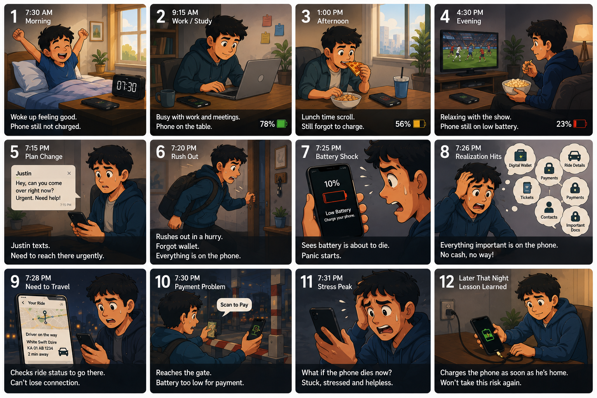

02 — Research
Eight conversations and three days of diaries.
We conducted 8 semi-structured interviews with full-time working professionals aged 23 to 55, alongside a 3-day diary study where participants logged when they charged, where they were, and how they felt when battery dropped below 20%.
The interviews captured how people talked about battery anxiety. The diaries showed what they actually did. The gap between the two was where the design opportunity lived.
Two findings from the diary study
FINDING 01
The idle counter
Across the 3-day diary, participants' phones sat idle on counters and desks for 10 to 30 minutes after they got home. The charger was within reach. The charging window was wide open. Almost no one used it.
FINDING 02
The "I'll do it later" loop
6 of 8 participants regularly noticed low battery during the day, told themselves they would charge soon, and then forgot until it was critical. The intent to charge was there. The trigger to actually do it wasn't.
7/8
Participants reported weekly low-battery stress
8/8
Described disproportionate panic when battery dropped below 20%
23–55
Age range, all full-time working professionals
What users said
-
01
"When my phone hits 10% I get this wave of panic. Not because I actually need it right then, just this sense of being exposed. Like what if something happens?"
-
02
"I once missed an important call because my phone was dead. I'd been at home for an hour the evening before and just hadn't plugged in. Still bothers me."
-
03
"I start rationing screen time at 30%. Closing apps. Lowering brightness. Just trying to stretch what's left until I get home."
-
04
"By bedtime it's already too late. I plug it in at 8% and hope it'll be full by morning."
A day in the life

A typical day slowly turns into battery anxiety.
03 — The Insight
Charging is reactive, not habitual. The system has to initiate the moment.
The observation
No participant described charging as something they planned. It happened in response to crisis. The OS warning fires, the phone slips below 10%, the cable gets hunted down at the worst possible moment.
The response
Smart Charge couldn't rely on users forming the habit on their own. It had to intercept the idle window before the emergency, not after.
04 — Concept
Smart Charge: a schedule-aware nudge inside Battery settings.
Smart Charge is a single feature, placed inside the OS Battery settings. Four time anchors are pre-set from a typical working professional's day: wake up, leave home, return home, bedtime. When the conditions align at one of these transition moments, a single contextual notification fires.
A hard cap of three nudges a day across the four anchors. The system picks the most relevant moments and stays quiet through the rest.
NUDGE 01
Pre-commute
Battery below threshold during the morning departure window. Catches the user before they walk out the door.
NUDGE 02 · CORE
Return home
Battery below threshold after arriving home, phone idle for 10 minutes. All conditions met. The highest-value moment in the day.
NUDGE 03
Pre-bedtime
Battery below threshold within the final hour before bedtime. Ensures the user wakes up to a full phone without thinking about it.
05 — Architecture
Five conditions, one nudge. Each gate prevents a specific failure.
A nudge only fires when every one of these is simultaneously true. Each gate is a deliberate guard against the way well-intentioned notifications normally go wrong.
01
Within a transition window
±30 min of a defined anchor.
Prevents
Random-time nudges that don't match any natural action moment.
02
Phone is idle
Screen off, no active apps, stationary for 10+ minutes.
Prevents
Interrupting the user mid-task.
03
Battery below threshold
Default 60%. Anything under 30% nudges immediately.
Prevents
Nudging when there is no real need to charge.
04
Home Wi-Fi connected
Recognised SSID. Soft location proxy, no GPS required.
Prevents
Firing when the user isn't actually home.
05
Not currently charging
No power source of any kind: wall, wireless, car, or power bank.
Prevents
The most annoying failure: nudging while already plugged in.
07 — Trade-offs
Getting the trigger right meant getting privacy right.
Before settling on the five-gate trigger, we worked through three approaches to the location signal. Each one taught the next.
×
Attempt 01 · Rejected
Time only
A pure schedule: if it's 6pm and battery is below 60%, nudge. Zero permissions, zero infrastructure. But it doesn't know if you're actually home.
Why it failed
Too many false positives on days that didn't match the schedule — meetings, trains, anywhere the charger isn't.
×
Attempt 02 · Rejected
GPS location
Location would solve the false positives instantly. But always-on GPS permission for a battery feature is disproportionate.
Why it failed
A permission ask that big would quietly kill adoption — many users would refuse, the rest would feel uneasy.
✓
Chosen · What worked
Wi-Fi SSID + time anchors
The home Wi-Fi network is a soft location signal. If the phone connects to your home SSID, it's a reliable proxy for "the user is likely home" — no GPS required.
Why it works
- No permission prompt required
- Stored on-device only, never transmitted
- Already known to the OS
- Pairs naturally with time anchors to eliminate false positives